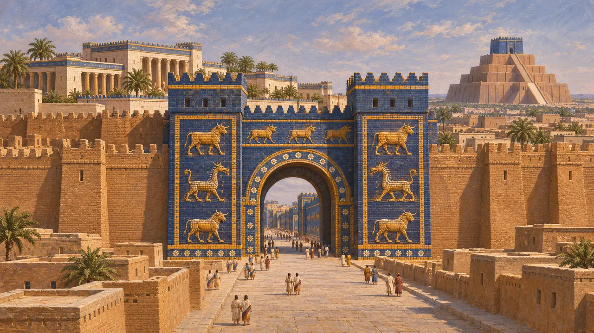
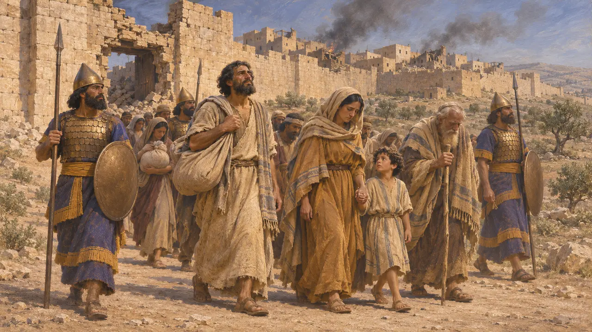
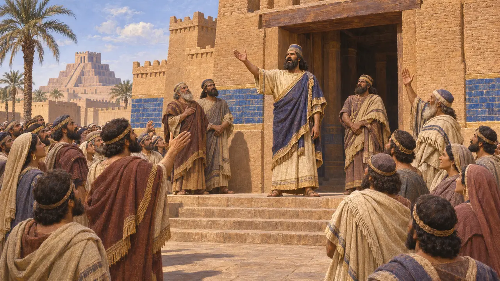
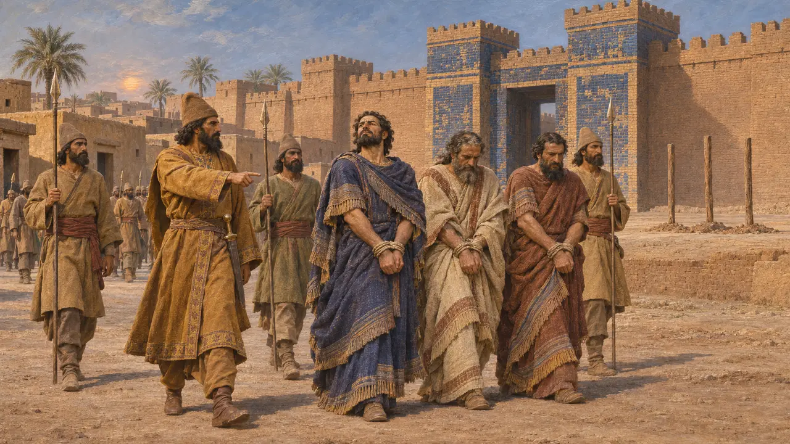

네부카드네자르 2세
기원전 605~562년 바빌론의 왕. 기원전 522~521년 두 반란자가 다리우스에 맞서 그의 이름을 내세웠다
네부카드네자르 2세는 신바빌로니아 제국의 가장 위대한 왕으로, 페르시아인이 차지한 바빌론의 상당 부분을 세운 건설자였다. 기원전 522~521년, 두 사람이 그의 이름을 내세워 다리우스에 맞서 바빌론을 일으켜 세웠다. 한 사람은 자신이 나보니두스의 아들 네부카드네자르라고 주장한 니딘투벨이고, 다른 한 사람은 아르메니아인 아라카였다.
게임에서: 이 게임은 바가스타나 레벨의 연대기, 대사, 백과사전에 등장하는 두 반란군을 통해 네부카드네자르의 이름을 언급한다.

바빌론의 건설자
당대 기록네부카드네자르의 건축 비문에는 바빌론의 성벽, 유약 벽돌로 만든 용과 황소로 장식된 이슈타르 문, 궁전들, 그리고 거대한 지구라트가 기록되어 있다. 그의 이름이 찍힌 벽돌은 도시 곳곳에서 발견된다. 헤로도토스가 묘사한 바빌론은 대체로 그의 작품이다.
Nebuchadnezzar's building inscriptions; Herodotus 1.178-187

예루살렘의 정복자
당대 기록바빌로니아 연대기는 그가 기원전 597년에 예루살렘을 점령했다고 기록하고 있으며, 히브리 성경은 그가 기원전 587-586년에 예루살렘을 파괴하고 그 백성을 바빌론으로 끌고 갔다고 전한다. 훗날 키루스는 에즈라기가 전하듯 유배민들이 돌아가도록 허락했다.
Babylonian Chronicle; 2 Kings 24-25; Ezra 1

첫 번째 가짜 네부카드네자르
당대 기록다리우스는 니딘투벨이라는 바빌로니아인이 자신이 나보니두스의 아들 네부카드네자르라고 사람들에게 거짓말을 했고, 그리하여 바빌론이 그에게 넘어갔다고 말한다. 다리우스는 티그리스강과 자자나에서 그를 무찌르고 바빌론을 점령했다. 기원전 522년 네부카드네자르의 연호가 적힌 점토판들이 이 치세를 입증한다.
Behistun inscription §16-20; Babylonian tablets

두 번째
당대 기록다리우스의 말에 따르면, 기원전 521년 아라카라는 아르메니아인이 바빌론에서 봉기해 자신을 나보니두스의 아들 네부카드네자르라고도 칭했다. 다리우스의 장군 인타프레네스가 도시를 점령했고, 아라카와 그의 주요 인사들은 말뚝에 꿰여 처형되었다. 옛 왕의 이름을 취했다는 사실은 그에 대한 기억이 여전히 얼마나 강했는지를 보여 준다.
Behistun inscription §49-50
출처
- Behistun inscription §16-20, §49-50
- Babylonian Chronicle
- Herodotus 1.178-187
- 2 Kings 24-25